TensorFlow-FlexUNet-Image-Segmentation-Drishti-Glaucoma (2026/02/19)
Sarah T. Arai
Software Laboratory antillia.com
This is the first experiment of Image Segmentation for Drishti-Glaucoma based on our TensorFlowFlexUNet
(TensorFlow Flexible UNet Image Segmentation Model for Multiclass),
and an
Augmented-Drishti-Glaucoma-ImageMask-Dataset
, which was derived from
Drishti-GS - RETINA DATASET FOR ONH SEGMENTATION on the kaggle.com
Actual Image Segmentation for Drishti-Glaucoma Images
As shown below, the inferred masks predicted by our segmentation model trained by the dataset appear similar to the ground truth masks.
rgb_map = {Optic Disc: yellow, Optic Cup: red}
| Input: image |
Mask (ground_truth) |
Prediction: inferred_mask |
| 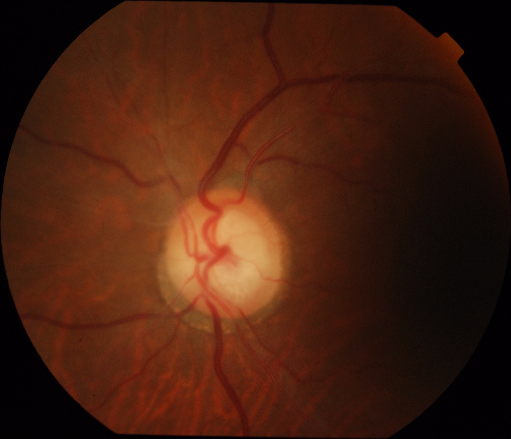 |
|
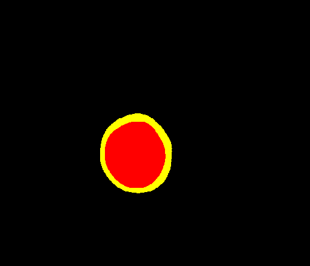 |
| 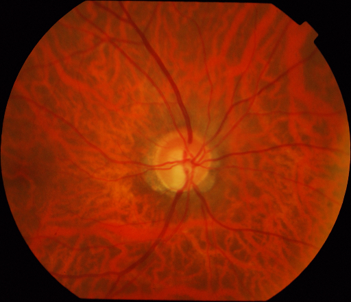 |
|
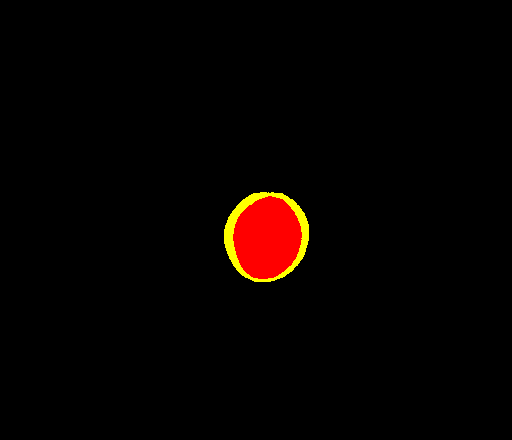 |
| 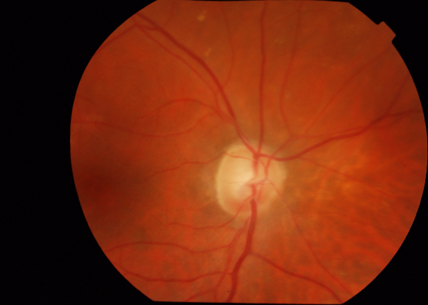 |
|
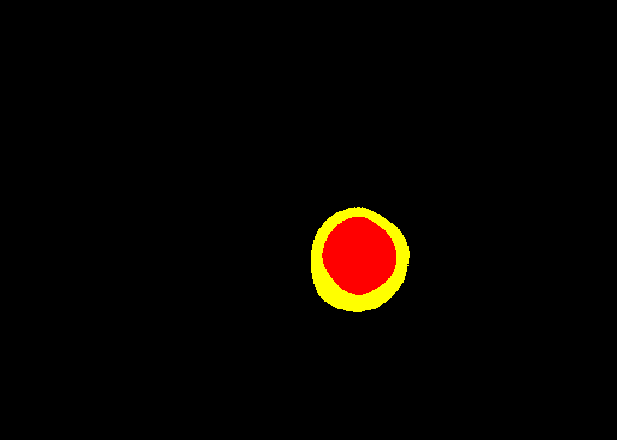 |
1 Dataset Citation
The dataset used here was derived from
Drishti-GS - RETINA DATASET FOR ONH SEGMENTATION
Macular Glaucoma Segmentation on the kaggle.com
The following explanation was taken from the above kaggle web site.
About Dataset
This Dataset contains 50 train images and 51 test Images
In Each Directory there are two folders one is images and the second one is GT.
The later folder contains Optic Disk and Cup masks associated with the images in Images folder.
License
CC0: Public Domain
2 Drishti-Glaucoma ImageMask Dataset
If you would like to train this Drishti-Glaucoma Segmentation model by yourself,
please down load the
Augmented-Drishti-Glaucoma-ImageMask-Dataset.zip
on the google driive.
./dataset
└─Drishti-Glaucoma
├─test
│ ├─images
│ └─masks
├─train
│ ├─images
│ └─masks
└─valid
├─images
└─masks
Drishti-Glaucoma Statistics
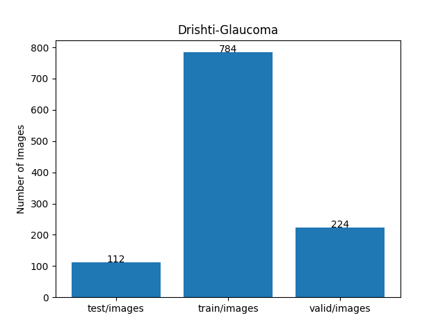
As shown above, the number of images of train and valid datasets is large enough to use for a training set of our segmentation model.
Train_images_sample
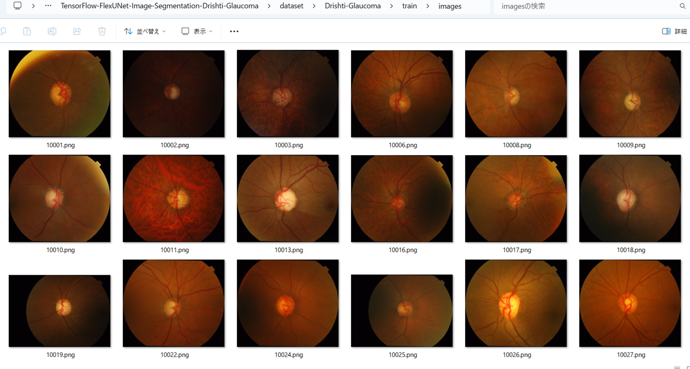
Train_masks_sample
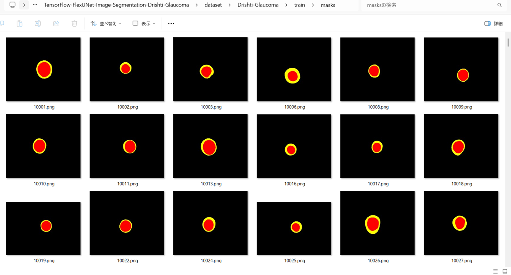
3 Train TensorflowFlexUNet Model
We trained Drishti-Glaucoma TensorflowFlexUNet Model by using the following
train_eval_infer.config file.
Please move to ./projects/TensorFlowFlexUNet/Drishti-Glaucoma and run the following bat file.
>1.train.bat
, which simply runs the following command.
>python ../../../src/TensorFlowFlexUNetTrainer.py ./train_eval_infer.config
Model parameters
Defined a small base_filters=16 and a large base_kernels=(11,11) for the first Conv Layer of Encoder Block of
TensorFlowFlexUNet.py
and a large num_layers (including a bridge between Encoder and Decoder Blocks).
[model]
image_width = 512
image_height = 512
image_channels = 3
input_normalize = True
normalization = False
num_classes = 3
base_filters = 16
base_kernels = (11,11)
num_layers = 8
dropout_rate = 0.05
dilation = (1,1)
Learning rate
Defined a small learning rate.
[model]
learning_rate = 0.00007
Loss and metrics functions
Specified "categorical_crossentropy" and "dice_coef_multiclass".
[model]
loss = "categorical_crossentropy"
metrics = ["dice_coef_multiclass"]
Learning rate reducer callback
Enabled learing_rate_reducer callback, and a small reducer_patience.
[train]
learning_rate_reducer = True
reducer_factor = 0.5
reducer_patience = 4
Early stopping callback
Enabled early stopping callback with patience parameter.
[train]
patience = 10
RGB color map
rgb color map dict for Drishti-Glaucoma 1+1 classes.
[mask]
mask_file_format = ".png"
;Drishti-Glaucoma 1+2
rgb_map = {(0,0,0):0, (255,255,0):1, (255,0,0):2}
Epoch change inference callbacks
Enabled epoch_change_infer callback.
[train]
epoch_change_infer = True
epoch_change_infer_dir = "./epoch_change_infer"
epoch_changeinfer = False
epoch_changeinfer_dir = "./epoch_changeinfer"
num_infer_images = 6
By using this epoch_change_infer callback, on every epoch_change, the inference procedure can be called
for 6 images in mini_test folder. This will help you confirm how the predicted mask changes
at each epoch during your training process.
Epoch_change_inference output at starting (1,2,3)
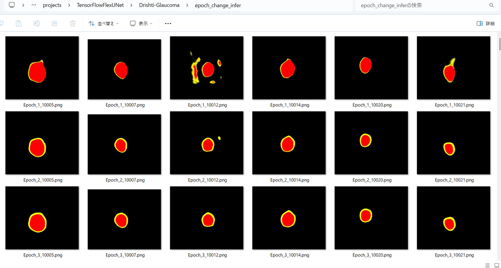
Epoch_change_inference output at middle-point (28,29,30)
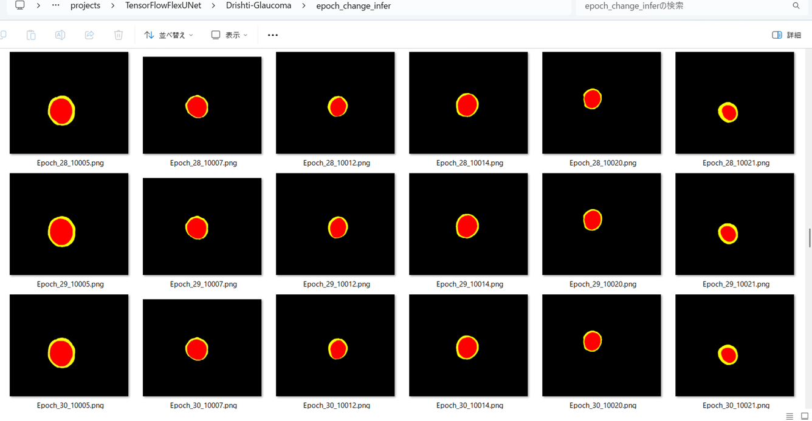
Epoch_change_inference output at ending (58,59,60)
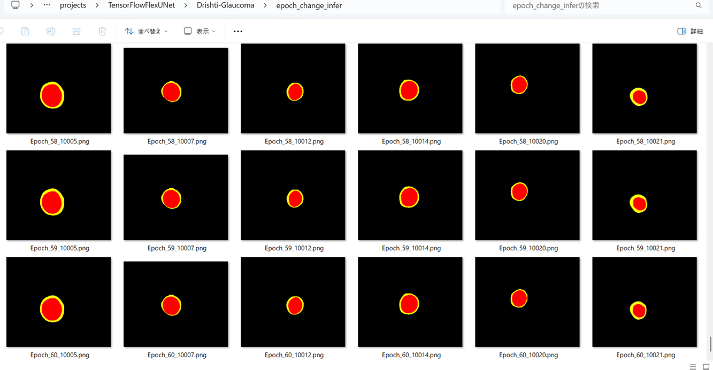
In this experiment, the training process was terminated at epoch 60.

train_metrics.csv
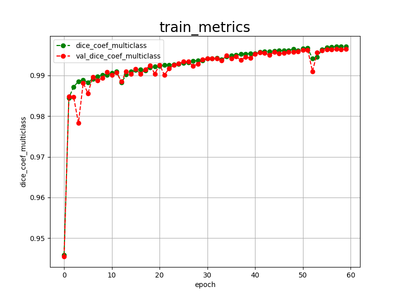
train_losses.csv
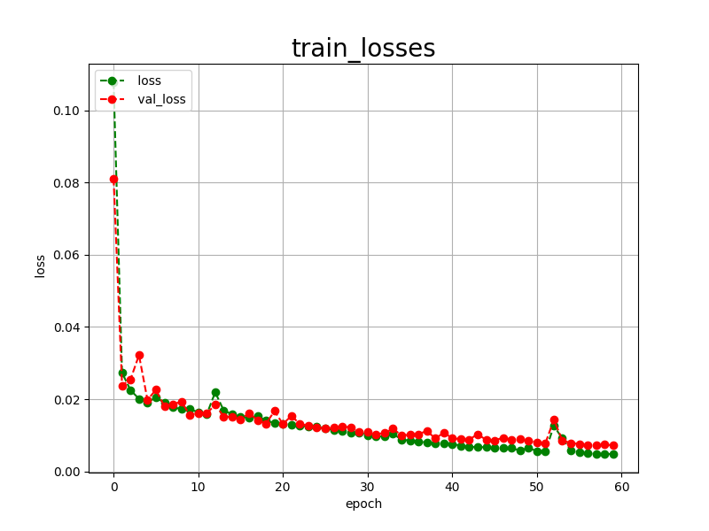
4 Evaluation
Please move to a ./projects/TensorFlowFlexUNet/Drishti-Glaucoma folder,
and run the following bat file to evaluate TensorflowFlexUNet model for Drishti-Glaucoma.
>./2.evaluate.bat
This bat file simply runs the following command.
>python ../../../src/TensorFlowFlexUNetEvaluator.py ./train_eval_infer.config
Evaluation console output:

Image-Segmentation-Drishti-Glaucoma
evaluation.csv
The loss (categorical_crossentropy) to this Drishti-Glaucoma/test was very low, and dice_coef_multiclass very high as shown below.
categorical_crossentropy,0.0084
dice_coef_multiclass,0.9963
5 Inference
Please move to a ./projects/TensorFlowFlexUNet/Drishti-Glaucoma folder
,and run the following bat file to infer segmentation regions for images by the Trained-TensorflowFlexUNet model for Drishti-Glaucoma.
>./3.infer.bat
This simply runs the following command.
>python ../../../src/TensorFlowFlexUNetInferencer.py ./train_eval_infer.config
mini_test_images
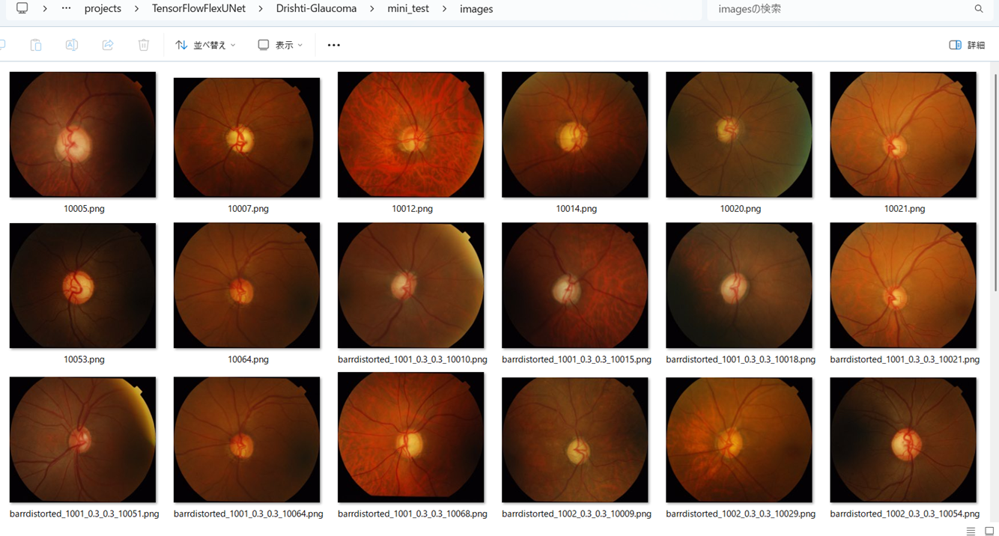
mini_test_mask(ground_truth)
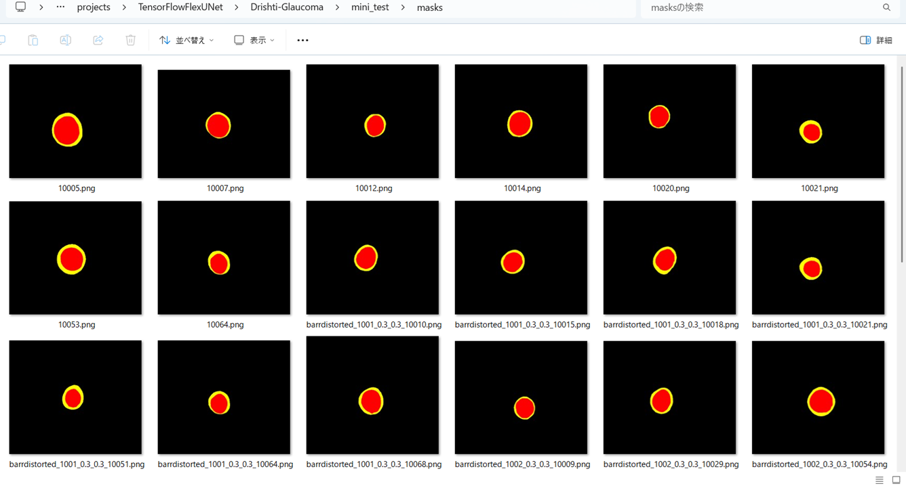
Inferred test masks
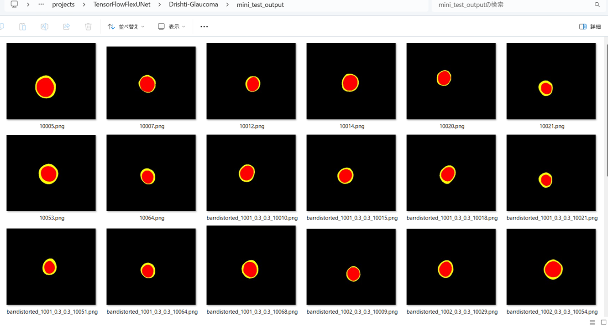
Enlarged images and masks for Drishti-Glaucoma Images
As shown below, the inferred masks predicted by our segmentation model trained by the dataset appear similar to the ground truth masks.
rgb_map = {Optic Disc: yellow, Optic Cup: red}
| Input: image |
Mask (ground_truth) |
Prediction: inferred_mask |
| 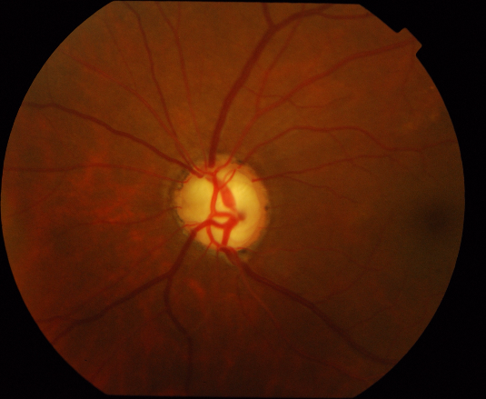 |
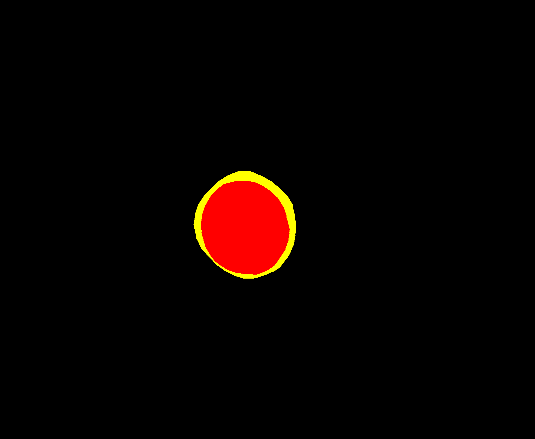 |
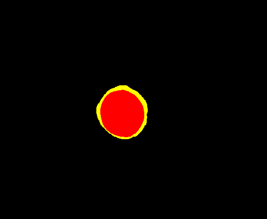 |
| 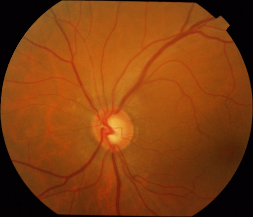 |
 |
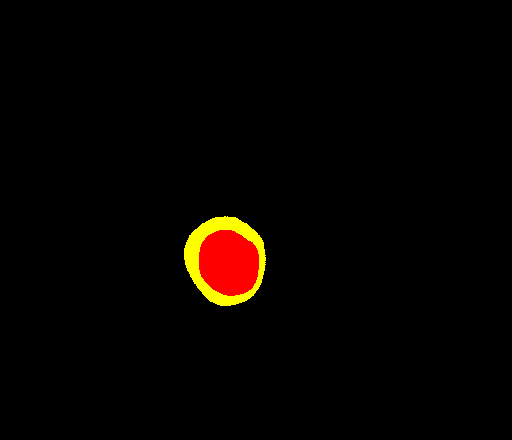 |
| 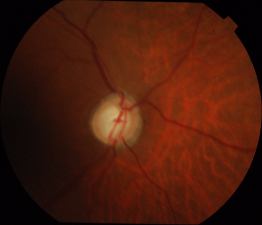 |
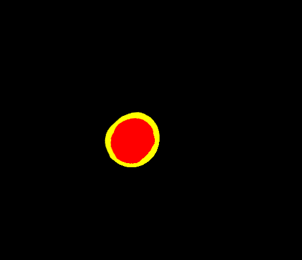 |
|
| 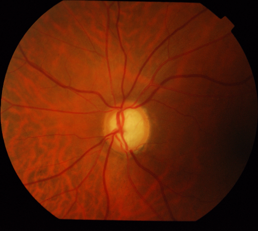 |
|
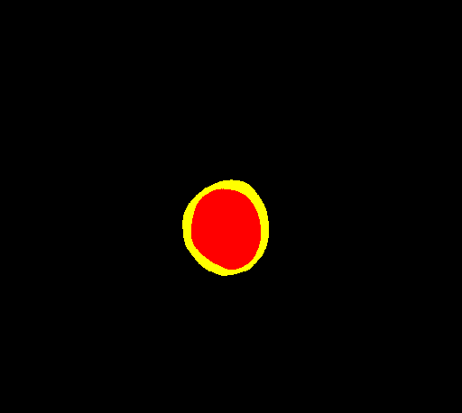 |
| 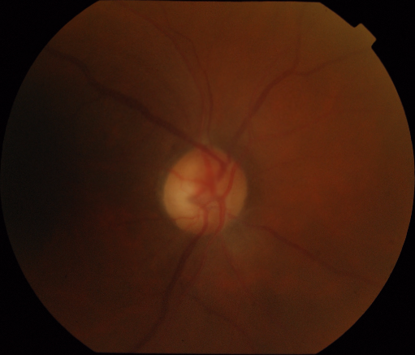 |
|
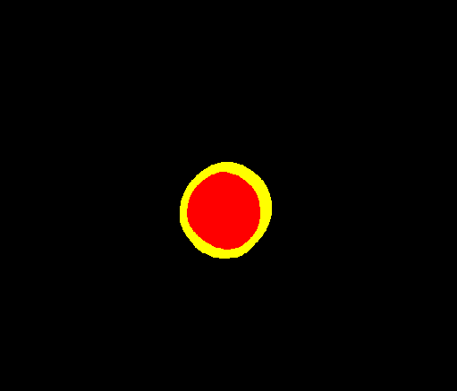 |
| 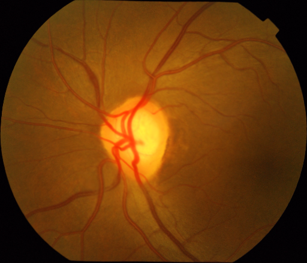 |
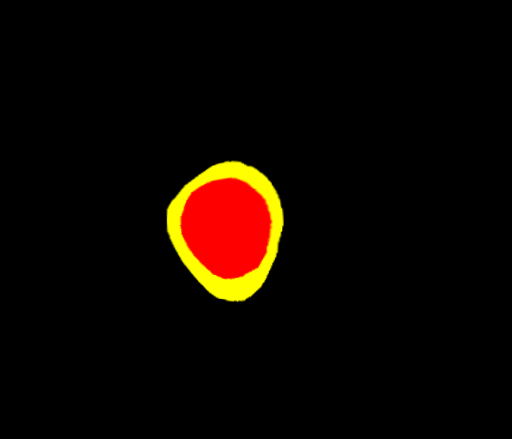 |
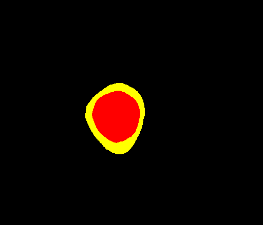 |
References
1. Segmentation and Classification of Glaucoma Using U-Net with Deep Learning Model
M.B. Sudhan, M. Sinthuja, S. Pravinth Raja, J. Amutharaj, G. Charlyn Pushpa Latha, S. Sheeba Rachel, T. Anitha, T. Rajendran, Yosef Asrat Waji
https://onlinelibrary.wiley.com/doi/10.1155/2022/1601354?msockid=3ec756cfd5d167d7342f47c9d4de66ff
2. Glaucoma detection from retinal fundus images using graph convolution based multi-task model
Satyabrata Lenka, Zefree Lazarus Mayaluri, Ganapati Panda
https://www.sciencedirect.com/science/article/pii/S2772671125000385
3. Energetic Glaucoma Segmentation and Classification Strategies Using Depth Optimized Machine Learning Strategies
V Elizabeth Jesi, Shabnam Mohamed Aslam, G Ramkumar, A Sabarivani, A K Gnanasekar, Prince Thomas
https://pmc.ncbi.nlm.nih.gov/articles/PMC8639261/
4. TensorFlow-FlexUNet-Image-Segmentation-Glaucoma-Fundus
Toshiyuki Arai
https://github.com/sarah-antillia/TensorFlow-FlexUNet-Image-Segmentation-Glaucoma-Fundus
4. TensorFlow-FlexUNet-Image-Segmentation-Model
Toshiyuki Arai
https://github.com/sarah-antillia/TensorFlow-FlexUNet-Image-Segmentation-Model